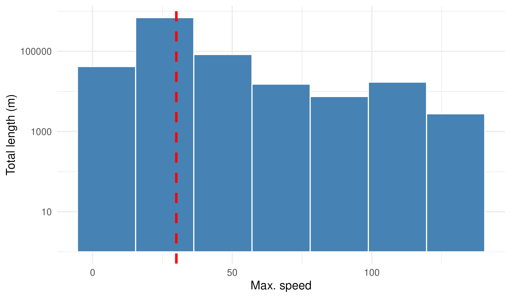
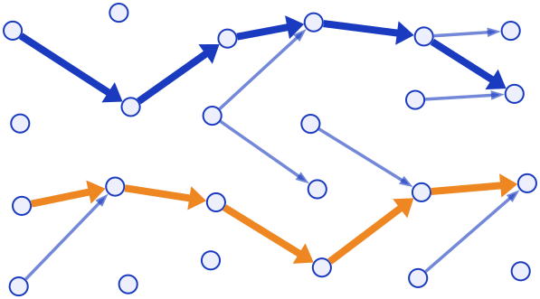
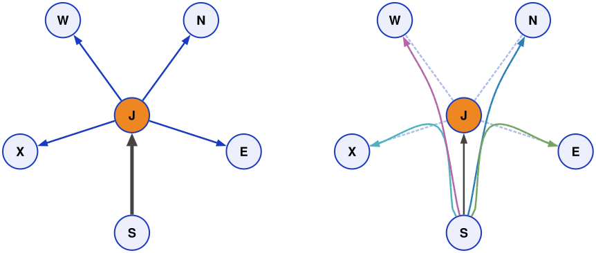

Cities as stories
Mark Padgham
rOpenSci & UrbanAnalyst
Helsinki
- Road deaths (2025): 0
- All roads max 30km/hr
Delft
- Road deaths (2025): ? but 759 in NL, so > 0
- Most roads max speed: ?
Highway speed distribution in Delft (Oct 2026)

How can
Delft
reduce speeds?
Where can
Delft
reduce speeds?
Where can
Delft
reduce speeds?
Where?
When?
Which order?
Where can
Delft
reduce speeds?
What to do first?
What to do first?
End result
depends on
What to do first?
End result
depends on
is a story
where, when, & how

How can
Delft
learn from
Helsinki?
Input data
Processing & Algorithms
Output data
Spatial
Data
Vector, not raster
Tabular
Data
| x | y | colour |
|---|
| 0 | 0 | |
| 0 | 1 | red |
| 1 | 1 | |
| 1 | 1 | red |
| 2 | 1 | green |
| 2 | 2 | |
Tabular
Data
| x | y | colour | shape |
|---|
| 0 | 0 | | |
| 0 | 1 | red | square |
| 1 | 1 | | circle |
| 1 | 1 | red | |
| 2 | 1 | green | |
| 2 | 2 | | |
Tabular
Data
are
mostly empty
Tabular
Data
are
inefficient
Tabular
Data
| x | y | colour | shape |
|---|
| 0 | 0 | | |
| 0 | 1 | red | square |
| 1 | 1 | | circle |
| 1 | 1 | red | |
| 2 | 1 | green | |
| 2 | 2 | | |
Tabular
Data
| key | x | y | colour | shape |
|---|
| 0 | 0 | 0 | | |
| 1 | 0 | 1 | red | square |
| 2 | 1 | 1 | | circle |
| 3 | 1 | 1 | red | |
| 4 | 2 | 1 | green | |
| 5 | 2 | 2 | | |
Tabular
Data
| key | x | y |
|---|
| 0 | 0 | 0 |
| 1 | 0 | 1 |
| 2 | 1 | 1 |
| 3 | 1 | 1 |
| 4 | 2 | 1 |
| 5 | 2 | 2 |
| key | colour |
|---|
| 1 | red |
| 3 | red |
| 4 | green |
| colour | properties |
|---|
| red | Goes fast |
| green | Helps people relax |
Tabular
Data
| key | x | y |
|---|
| 0 | 0 | 0 |
| 1 | 0 | 1 |
| 2 | 1 | 1 |
| 3 | 1 | 1 |
| 4 | 2 | 1 |
| 5 | 2 | 2 |
| shape | properties |
|---|
| square | Pointy and hurts |
| circle | Bounces well |
Multi
Tabular
Data
Are
relational
What to do first?
End result
depends on
OSM
data structure
<node id="25316206" version="4" timestamp="2021-09-22T14:00:34Z" lat="52.0225868" lon="4.3754719">
<tag k="barrier" v="lift_gate"/>
</node>
<way id="4239535" version="24" timestamp="2023-12-30T17:36:45Z">
<nd ref="1432937786"/>
<nd ref="1432937797"/>
...
<tag k="highway" v="cycleway"/>
<tag k="name" v="Bospad"/>
</way>
<relation id="..." version="...">
<member type="way" ref="4239535" role=""/>
<member type="way" ref="4239536" role=""/>
...
<tag k="type" v="route"/>
<tag k="route" v="bicycle"/>
</relation>
OSM
data structure
is
relational
OSM
data structure
is
hierarchically
relational
library (osmdata)
dat <- opq ("Delft Netherlands") |>
add_osm_feature (key = "highway") |>
osmdata_sc (doc = "delft-hw.osm")
osmdata_sc(): Silicate format
names (dat)
#> "nodes" "relation_members" "relation_properties" "object"
#> "object_link_edge" "edge" "vertex" "meta"
dat$vertex
#> x_ y_ vertex_
#> 1 4.36 52.0 21702193
#> 2 4.36 52.0 21766435
#> 3 4.36 52.0 21766438
dat$edge
#> # A tibble: 48,368 × 3
#> .vx0 .vx1 edge_
#> <chr> <chr> <chr>
#> 1 1432937786 1432937797 PL7KhoEg2e
#> 2 1432937797 2961946231 OZaR5sC0SU
#> 3 2961946231 25315554 jk8s6kCjvL
dat$object_link_edge
#> # A tibble: 48,368 × 3
#> edge_ object_ native_
#> <chr> <chr> <lgl>
#> 1 PL7KhoEg2e 4239535 TRUE
#> 2 OZaR5sC0SU 4239535 TRUE
#> 3 jk8s6kCjvL 4239535 TRUE
dat$object
#> # A tibble: 79,385 × 3
#> object_ key value
#> <chr> <chr> <chr>
#> 1 4239535 foot yes
#> 2 4239535 highway cycleway
#> 3 4239535 lit no
Input data
-
Processing &
Algorithms
Output data
Input data
-
Processing &
Algorithms
Output data
Compound Junctions

require relational data
Routing is
not just routing
Bicycle
Routing is
difficult
Public
transport
Routing is
difficult
Input data
Processing & Algorithms
Output data
Where?
When?
Which order?
Cities as stories
Mark Padgham
rOpenSci & UrbanAnalyst